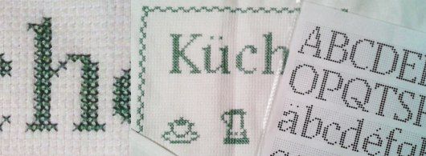

@charak
@charakStickSerif – eine Pixelschrift (nicht nur) für Kreuzstickereien
Eine gute Bekannte bestickt sehr gekonnt Geschirrtücher, Deckchen und Handtücher. Sie hat da schöne Motive als Vorlagen, die sie im Kreuzstich auf die Textilien überträgt. Nur ihre verwendete Schrift hat mir nie richtig gefallen. Sie ist sehr verschnörkelt, gekünstelt und hatte eine etwas merkwürdige Verteilung von dicken und dünnen Linien. Vor allem aber beansprucht die Schnörkelschrift in der Breite oft zu viel Platz, zum Beispiel wenn ein Handtuch mit Annalena-Sophie bestickt werden soll.

Deswegen habe ich StickSerif entworfen, eine Pixelschrift mit klassischen Proportionen und Hybridziffern ( = Zahlenvariante mit leichten Ober- und Unterlängen). Die erste Präsentation beim „Kunden“ ergab aber, dass die meisten Handtücher für die Stickerei einen festen Streifen von 15 Kreuzen Höhe (plus Rand) besitzen – ohne extra Platz für die Unterlängen.
So habe ich Versalziffern nachgereicht und eine Reihe Buchstaben überarbeitet (Alternativ-Komma, Varianten für J Q Ä Ö Ü g j p q y). Die verkürzten Zeichen sind in der Schriftdatei als Stylistic Set 01 per OpenType zu erreichen oder über die Sonderzeichen-Tabelle.
Vom Zeichenumfang her deckt StickSerif iso 8859-1 (Latein-1) ab und enthält außerdem die Zeichen Ÿ ẞ … – — ‘ ’ ‚ ‛ “ ” „ † • ‹ › € und ™. Das sollte für die meisten zu bestickenden Textilien ausreichen.
Zum Standard-Schnitt habe ich noch eine fette Variante entworfen, allerdings ohne Alternativbuchstaben. Schaltet man auf die Kursive um, so bleiben die Buchstabenformen gleich; dafür werden Rasterpunkte eingeblendet, damit die Vorlage leichter abgezählt werden kann.
StickSerif herunterladen
(zip-Ordner, 820 kB)
Mit im Download-Paket steckt eine Zeichenübersicht als PDF. Wenn keine Einzelworte gesetzt werden, kann diese Übersicht als als Stickvorlage dienen.
---
Rubrik(en):
#ansporn
#typografie